CODING AGENTS AS PIXEL WORLD MODELS
traex/DeepSeek-V4.1-Flash · 0034
点击播放 · 原生 RGB 像素
逐轮保存的候选
回放视频、检查图与代码变化。
每份候选均可单独播放。实际图片检查记录在下方工具轨迹中。
候选 01播放与检查图
点击播放 · 原生 RGB 像素

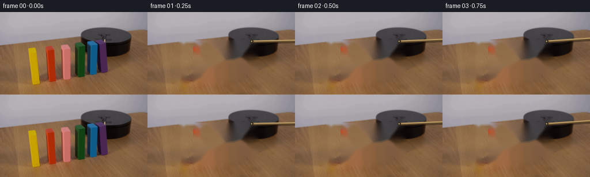
展开代码变化
--- 上一保存版本
+++ 本次保存版本
@@ -0,0 +1,321 @@
+from pathlib import Path
+
+import cv2
+import numpy as np
+from PIL import Image
+
+import artifact_io
+
+
+CASE_DIR = Path(__file__).resolve().parent
+W, H = 256, 144
+N = 20
+S = 4
+
+
+# Clockwise from the left end of the row to the platform.
+BLOCKS = [
+ {
+ "name": "yellow",
+ "poly": [(49, 61), (67, 57), (68, 126), (59, 132), (47, 126)],
+ "pivot": (60.0, 129.0),
+ "start": 3.45,
+ "duration": 4.15,
+ },
+ {
+ "name": "red",
+ "poly": [(82, 58), (100, 57), (103, 122), (94, 128), (79, 122)],
+ "pivot": (95.0, 126.0),
+ "start": 6.10,
+ "duration": 4.10,
+ },
+ {
+ "name": "pink",
+ "poly": [(106, 55), (126, 52), (127, 121), (119, 127), (103, 121)],
+ "pivot": (120.0, 124.0),
+ "start": 8.20,
+ "duration": 4.05,
+ },
+ {
+ "name": "green",
+ "poly": [(130, 52), (149, 50), (150, 116), (142, 124), (127, 116)],
+ "pivot": (143.0, 122.0),
+ "start": 10.20,
+ "duration": 4.00,
+ },
+ {
+ "name": "blue",
+ "poly": [(152, 50), (171, 48), (171, 111), (165, 120), (147, 112)],
+ "pivot": (166.0, 118.0),
+ "start": 12.20,
+ "duration": 3.85,
+ },
+ {
+ "name": "purple",
+ "poly": [(173, 45), (189, 42), (193, 96), (186, 110), (168, 102)],
+ "pivot": (188.0, 105.0),
+ "start": 14.10,
+ "duration": 3.75,
+ },
+]
+
+
+def polygon_mask(shape, polygon, shrink=0.0):
+ w, h = shape
+ mask = Image.new("L", (w, h), 0)
+ cx = sum(x for x, _ in polygon) / len(polygon)
+ cy = sum(y for _, y in polygon) / len(polygon)
+ points = []
+ for x, y in polygon:
+ dx, dy = x - cx, y - cy
+ length = max((dx * dx + dy * dy) ** 0.5, 1e-6)
+ points.append((x - shrink * dx / length, y - shrink * dy / length))
+ from PIL import ImageDraw
+
+ ImageDraw.Draw(mask).polygon(points, fill=255)
+ return np.asarray(mask, dtype=np.uint8)
+
+
+def build_scene():
+ source = np.asarray(Image.open(CASE_DIR / "first_frame.png").convert("RGB"))
+
+ # Remove the blocks and their baked-in contact shadows so every animated
+ # block reveals the original table texture as it tips over.
+ inpaint_mask = np.zeros((H, W), dtype=np.uint8)
+ for block in BLOCKS:
+ mask = polygon_mask((W, H), block["poly"], shrink=-2.0)
+ inpaint_mask = np.maximum(inpaint_mask, mask)
+ x0, y0, x1, y1 = cv2.boundingRect(mask)
+ cv2.ellipse(
+ inpaint_mask,
+ (x0 + 1, y1 - 1),
+ (5, 3),
+ 0,
+ 0,
+ 360,
+ 255,
+ -1,
+ )
+
+ # The horizontal lever is redrawn at every angle. Remove its initial
+ # footprint between the sprites, leaving the platform untouched.
+ lever_mask = np.zeros((H, W), dtype=np.uint8)
+ cv2.line(lever_mask, (57, 52), (179, 51), 255, 4, cv2.LINE_AA)
+ inpaint_mask = np.maximum(inpaint_mask, lever_mask)
+ inpaint_mask = cv2.morphologyEx(
+ inpaint_mask, cv2.MORPH_CLOSE, np.ones((3, 3), np.uint8)
+ )
+ background = cv2.inpaint(
+ cv2.cvtColor(source, cv2.COLOR_RGB2BGR),
+ inpaint_mask,
+ 5,
+ cv2.INPAINT_TELEA,
+ )
+ background = cv2.cvtColor(background, cv2.COLOR_BGR2RGB)
+
+ sprites = []
+ for block in BLOCKS:
+ alpha = polygon_mask((W, H), block["poly"], shrink=-0.15)
+ ys, xs = np.where(alpha > 0)
+ pad = 3
+ x0, x1 = max(0, xs.min() - pad), min(W, xs.max() + pad + 1)
+ y0, y1 = max(0, ys.min() - pad), min(H, ys.max() + pad + 1)
+ rgba = np.dstack([source[y0:y1, x0:x1], alpha[y0:y1, x0:x1]])
+ sprites.append({"rgba": rgba, "origin": (x0, y0)})
+
+ background_hi = cv2.resize(
+ background, (W * S, H * S), interpolation=cv2.INTER_LANCZOS4
+ )
+ sprite_hi = []
+ for item in sprites:
+ rgba = cv2.resize(
+ item["rgba"],
+ None,
+ fx=S,
+ fy=S,
+ interpolation=cv2.INTER_LANCZOS4,
+ )
+ rgba = np.clip(rgba, 0, 255).astype(np.uint8)
+ sprite_hi.append({"rgba": rgba, "origin": item["origin"]})
+ return source, background_hi, sprite_hi
+
+
+def smootherstep(x):
+ x = float(np.clip(x, 0.0, 1.0))
+ return x * x * x * (x * (x * 6 - 15) + 10)
+
+
+def block_angle(frame, block):
+ t = (frame - block["start"]) / block["duration"]
+ if t <= 0:
+ return 0.0
+ if t >= 1:
+ return 83.5
+ # A domino accelerates after release, then loses angular speed as it
+ # reaches its neighbour/table.
+ return 83.5 * (0.82 * t**1.58 + 0.18 * smootherstep(t))
+
+
+def lever_angle(frame):
+ keys = np.array(
+ [
+ [0.0, 180.0],
+ [1.0, 181.0],
+ [2.0, 182.4],
+ [3.0, 183.9],
+ [4.0, 185.9],
+ [5.0, 188.0],
+ [6.0, 190.0],
+ [7.0, 191.4],
+ [20.0, 192.0],
+ ]
+ )
+ return float(np.interp(frame, keys[:, 0], keys[:, 1]))
+
+
+def transform_sprite(rgba, origin, pivot, angle_deg):
+ """Rotate a sprite clockwise about a world-space pivot."""
+ theta = np.deg2rad(angle_deg)
+ c, s = np.cos(theta), np.sin(theta)
+
+ # Very slight foreshortening makes the wooden prisms feel three
+ # dimensional while they rotate through the camera plane.
+ sy = 1.0 - 0.055 * (angle_deg / 90.0) ** 2
+ linear = np.array([[c, -s * sy], [s, c * sy]], dtype=np.float64)
+ px, py = pivot[0] * S, pivot[1] * S
+ ox, oy = origin[0] * S, origin[1] * S
+ translation = np.array([px, py]) - linear @ np.array([px, py])
+ matrix = np.array(
+ [
+ [
+ linear[0, 0],
+ linear[0, 1],
+ translation[0] - linear[0, 0] * ox - linear[0, 1] * oy,
+ ],
+ [
+ linear[1, 0],
+ linear[1, 1],
+ translation[1] - linear[1, 0] * ox - linear[1, 1] * oy,
+ ],
+ ],
+ dtype=np.float64,
+ )
+ return cv2.warpAffine(
+ rgba,
+ matrix,
+ (W * S, H * S),
+ flags=cv2.INTER_LANCZOS4,
+ borderMode=cv2.BORDER_CONSTANT,
+ borderValue=(0, 0, 0, 0),
+ )
+
+
+def add_shadows(canvas, frame):
+ shadow = np.zeros((H * S, W * S, 4), dtype=np.uint8)
+ for block in BLOCKS:
+ theta = np.deg2rad(block_angle(frame, block))
+ length = 61.0 - 3.5 * (BLOCKS.index(block) / 5.0)
+ px, py = block["pivot"]
+ mid = (
+ px - np.sin(theta) * length * 0.44,
+ py + np.cos(theta) * length * 0.44,
+ )
+ axis = max(5.0, 12.0 + 10.0 * np.sin(theta))
+ minor = max(1.8, 3.3 - 1.0 * np.sin(theta))
+ cv2.ellipse(
+ shadow,
+ (int(round(mid[0] * S)), int(round(mid[1] * S))),
+ (int(axis * S), int(minor * S)),
+ -np.rad2deg(theta),
+ 0,
+ 360,
+ (0, 0, 0, 82),
+ -1,
+ cv2.LINE_AA,
+ )
+ shadow[:, :, :3] = 0
+ shadow = cv2.GaussianBlur(shadow, (0, 0), 2.6 * S)
+ alpha = shadow[:, :, 3:4].astype(np.float32) / 255.0
+ canvas *= 1.0 - 0.32 * alpha
+
+
+def add_lever(canvas, frame):
+ theta = np.deg2rad(lever_angle(frame))
+ pivot = np.array([181.0, 51.5]) * S
+ length = 122.0 * S
+ tip = pivot + np.array([-np.cos(theta), np.sin(theta)]) * length
+ p0 = tuple(np.round(pivot).astype(int))
+ p1 = tuple(np.round(tip).astype(int))
+
+ layer = np.zeros((H * S, W * S, 4), dtype=np.uint8)
+ cv2.line(
+ layer,
+ (p0[0] + 2 * S, p0[1] + 2 * S),
+ (p1[0] + 2 * S, p1[1] + 2 * S),
+ (28, 20, 12, 105),
+ int(4.0 * S),
+ cv2.LINE_AA,
+ )
+ cv2.line(layer, p0, p1, (91, 68, 39, 255), int(4.2 * S), cv2.LINE_AA)
+ cv2.line(
+ layer,
+ (p0[0], p0[1] - S),
+ (p1[0], p1[1] - S),
+ (183, 151, 99, 255),
+ int(2.0 * S),
+ cv2.LINE_AA,
+ )
+ cv2.circle(layer, p0, int(3.0 * S), (57, 45, 31, 255), -1, cv2.LINE_AA)
+ cv2.circle(
+ layer,
+ (p0[0] - S // 2, p0[1] - S // 2),
+ int(1.1 * S),
+ (189, 167, 126, 255),
+ -1,
+ cv2.LINE_AA,
+ )
+ alpha = layer[:, :, 3:4].astype(np.float32) / 255.0
+ canvas[:] = canvas * (1.0 - alpha) + layer[:, :, :3].astype(np.float32) * alpha
+
+
+def composite_sprite(canvas, sprite, block, frame):
+ angle = block_angle(frame, block)
+ rgba = transform_sprite(
+ sprite["rgba"], sprite["origin"], block["pivot"], angle
+ ).astype(np.float32)
+ alpha = rgba[:, :, 3:4] / 255.0
+
+ # A restrained directional light reinforces the prism faces.
+ light = 1.0 + 0.025 * np.cos(np.deg2rad(angle + 14.0))
+ rgb = np.clip(rgba[:, :, :3] * light, 0, 255)
+ canvas[:] = canvas * (1.0 - alpha) + rgb * alpha
+
+
+def render():
+ source, background, sprites = build_scene()
+ frames = np.empty((N, H, W, 3), dtype=np.uint8)
+ frames[0] = source
+
+ for frame in range(1, N):
+ canvas = background.astype(np.float32).copy()
+ add_shadows(canvas, frame)
+ add_lever(canvas, frame)
+
+ # Far/right blocks first, near/left blocks last.
+ for index in range(len(BLOCKS) - 1, -1, -1):
+ composite_sprite(canvas, sprites[index], BLOCKS[index], frame)
+
+ frame_rgb = cv2.resize(
+ np.clip(canvas, 0, 255).astype(np.uint8),
+ (W, H),
+ interpolation=cv2.INTER_AREA,
+ )
+ frames[frame] = frame_rgb
+
+ assert np.array_equal(frames[0], source)
+ artifact_io.save(frames, CASE_DIR)
+ return frames
+
+
+if __name__ == "__main__":
+ render()
候选 02播放与检查图
点击播放 · 原生 RGB 像素

展开代码变化
--- 上一保存版本
+++ 本次保存版本
@@ -18,44 +18,44 @@
{
"name": "yellow",
"poly": [(49, 61), (67, 57), (68, 126), (59, 132), (47, 126)],
- "pivot": (60.0, 129.0),
- "start": 3.45,
- "duration": 4.15,
+ "pivot": (66.5, 128.0),
+ "start": 9.55,
+ "duration": 4.05,
},
{
"name": "red",
"poly": [(82, 58), (100, 57), (103, 122), (94, 128), (79, 122)],
- "pivot": (95.0, 126.0),
- "start": 6.10,
- "duration": 4.10,
+ "pivot": (101.0, 125.0),
+ "start": 8.05,
+ "duration": 4.05,
},
{
"name": "pink",
"poly": [(106, 55), (126, 52), (127, 121), (119, 127), (103, 121)],
- "pivot": (120.0, 124.0),
- "start": 8.20,
- "duration": 4.05,
+ "pivot": (125.5, 123.0),
+ "start": 6.55,
+ "duration": 4.00,
},
{
"name": "green",
"poly": [(130, 52), (149, 50), (150, 116), (142, 124), (127, 116)],
- "pivot": (143.0, 122.0),
- "start": 10.20,
- "duration": 4.00,
+ "pivot": (148.5, 121.0),
+ "start": 5.05,
+ "duration": 3.95,
},
{
"name": "blue",
"poly": [(152, 50), (171, 48), (171, 111), (165, 120), (147, 112)],
- "pivot": (166.0, 118.0),
- "start": 12.20,
- "duration": 3.85,
+ "pivot": (169.5, 117.0),
+ "start": 3.55,
+ "duration": 3.90,
},
{
"name": "purple",
"poly": [(173, 45), (189, 42), (193, 96), (186, 110), (168, 102)],
- "pivot": (188.0, 105.0),
- "start": 14.10,
- "duration": 3.75,
+ "pivot": (190.5, 105.0),
+ "start": 2.05,
+ "duration": 3.85,
},
]
@@ -79,39 +79,36 @@
def build_scene():
source = np.asarray(Image.open(CASE_DIR / "first_frame.png").convert("RGB"))
- # Remove the blocks and their baked-in contact shadows so every animated
- # block reveals the original table texture as it tips over.
+ # Remove only the block silhouettes. Rebuilding each row from its nearby
+ # table samples avoids the colored smears that large masks produce.
inpaint_mask = np.zeros((H, W), dtype=np.uint8)
for block in BLOCKS:
- mask = polygon_mask((W, H), block["poly"], shrink=-2.0)
+ mask = polygon_mask((W, H), block["poly"], shrink=-0.5)
inpaint_mask = np.maximum(inpaint_mask, mask)
- x0, y0, x1, y1 = cv2.boundingRect(mask)
- cv2.ellipse(
- inpaint_mask,
- (x0 + 1, y1 - 1),
- (5, 3),
- 0,
- 0,
- 360,
- 255,
- -1,
- )
-
- # The horizontal lever is redrawn at every angle. Remove its initial
- # footprint between the sprites, leaving the platform untouched.
- lever_mask = np.zeros((H, W), dtype=np.uint8)
- cv2.line(lever_mask, (57, 52), (179, 51), 255, 4, cv2.LINE_AA)
- inpaint_mask = np.maximum(inpaint_mask, lever_mask)
- inpaint_mask = cv2.morphologyEx(
- inpaint_mask, cv2.MORPH_CLOSE, np.ones((3, 3), np.uint8)
- )
- background = cv2.inpaint(
- cv2.cvtColor(source, cv2.COLOR_RGB2BGR),
- inpaint_mask,
- 5,
- cv2.INPAINT_TELEA,
- )
- background = cv2.cvtColor(background, cv2.COLOR_BGR2RGB)
+ inpaint_mask = cv2.dilate(inpaint_mask, np.ones((3, 3), np.uint8))
+
+ background = source.astype(np.float32).copy()
+ rng = np.random.default_rng(34)
+ grain = rng.normal(0.0, 1.8, (H, W, 1)).astype(np.float32)
+ for y in range(H):
+ row = inpaint_mask[y] > 0
+ if not row.any():
+ continue
+ starts = np.flatnonzero(row & ~np.r_[False, row[:-1]])
+ ends = np.flatnonzero(row & ~np.r_[row[1:], False])
+ for x0, x1 in zip(starts, ends):
+ left = source[y, max(0, x0 - 5) : x0]
+ right = source[y, x1 + 1 : min(W, x1 + 6)]
+ if len(left) and len(right):
+ c0 = np.median(left, axis=0)
+ c1 = np.median(right, axis=0)
+ mix = np.linspace(0.0, 1.0, x1 - x0 + 1)[:, None]
+ background[y, x0 : x1 + 1] = c0 * (1.0 - mix) + c1 * mix
+ elif len(left):
+ background[y, x0 : x1 + 1] = np.median(left, axis=0)
+ elif len(right):
+ background[y, x0 : x1 + 1] = np.median(right, axis=0)
+ background = np.clip(background + grain, 0, 255).astype(np.uint8)
sprites = []
for block in BLOCKS:
@@ -153,21 +150,18 @@
return 83.5
# A domino accelerates after release, then loses angular speed as it
# reaches its neighbour/table.
- return 83.5 * (0.82 * t**1.58 + 0.18 * smootherstep(t))
+ return -82.0 * (0.82 * t**1.58 + 0.18 * smootherstep(t))
def lever_angle(frame):
keys = np.array(
[
- [0.0, 180.0],
- [1.0, 181.0],
- [2.0, 182.4],
- [3.0, 183.9],
- [4.0, 185.9],
- [5.0, 188.0],
- [6.0, 190.0],
- [7.0, 191.4],
- [20.0, 192.0],
+ [0.0, 90.0],
+ [1.0, 102.0],
+ [2.0, 135.0],
+ [3.0, 165.0],
+ [4.0, 178.0],
+ [20.0, 179.0],
]
)
return float(np.interp(frame, keys[:, 0], keys[:, 1]))
@@ -213,64 +207,52 @@
def add_shadows(canvas, frame):
shadow = np.zeros((H * S, W * S, 4), dtype=np.uint8)
for block in BLOCKS:
- theta = np.deg2rad(block_angle(frame, block))
- length = 61.0 - 3.5 * (BLOCKS.index(block) / 5.0)
+ angle = block_angle(frame, block)
+ theta = np.deg2rad(angle)
px, py = block["pivot"]
- mid = (
- px - np.sin(theta) * length * 0.44,
- py + np.cos(theta) * length * 0.44,
- )
- axis = max(5.0, 12.0 + 10.0 * np.sin(theta))
- minor = max(1.8, 3.3 - 1.0 * np.sin(theta))
+ axis = 6.0 + 3.0 * abs(np.sin(theta))
+ minor = 1.5 + 0.6 * abs(np.sin(theta))
cv2.ellipse(
shadow,
- (int(round(mid[0] * S)), int(round(mid[1] * S))),
+ (int(round((px - 1.0) * S)), int(round(py * S))),
(int(axis * S), int(minor * S)),
- -np.rad2deg(theta),
+ 0,
0,
360,
- (0, 0, 0, 82),
+ (0, 0, 0, 70),
-1,
cv2.LINE_AA,
)
shadow[:, :, :3] = 0
- shadow = cv2.GaussianBlur(shadow, (0, 0), 2.6 * S)
+ shadow = cv2.GaussianBlur(shadow, (0, 0), 1.1 * S)
alpha = shadow[:, :, 3:4].astype(np.float32) / 255.0
- canvas *= 1.0 - 0.32 * alpha
+ canvas *= 1.0 - 0.22 * alpha
def add_lever(canvas, frame):
theta = np.deg2rad(lever_angle(frame))
- pivot = np.array([181.0, 51.5]) * S
- length = 122.0 * S
+ pivot = np.array([181.5, 49.5]) * S
+ length = 27.0 * S
tip = pivot + np.array([-np.cos(theta), np.sin(theta)]) * length
p0 = tuple(np.round(pivot).astype(int))
p1 = tuple(np.round(tip).astype(int))
layer = np.zeros((H * S, W * S, 4), dtype=np.uint8)
+ cv2.line(layer, p0, p1, (77, 65, 55, 255), int(2.8 * S), cv2.LINE_AA)
cv2.line(
layer,
- (p0[0] + 2 * S, p0[1] + 2 * S),
- (p1[0] + 2 * S, p1[1] + 2 * S),
- (28, 20, 12, 105),
- int(4.0 * S),
+ (p0[0] - S // 2, p0[1] - S // 2),
+ (p1[0] - S // 2, p1[1] - S // 2),
+ (150, 131, 109, 255),
+ int(1.2 * S),
cv2.LINE_AA,
)
- cv2.line(layer, p0, p1, (91, 68, 39, 255), int(4.2 * S), cv2.LINE_AA)
- cv2.line(
- layer,
- (p0[0], p0[1] - S),
- (p1[0], p1[1] - S),
- (183, 151, 99, 255),
- int(2.0 * S),
- cv2.LINE_AA,
- )
- cv2.circle(layer, p0, int(3.0 * S), (57, 45, 31, 255), -1, cv2.LINE_AA)
+ cv2.circle(layer, p0, int(2.0 * S), (64, 54, 44, 255), -1, cv2.LINE_AA)
cv2.circle(
layer,
(p0[0] - S // 2, p0[1] - S // 2),
- int(1.1 * S),
- (189, 167, 126, 255),
+ int(0.7 * S),
+ (171, 155, 135, 255),
-1,
cv2.LINE_AA,
)
@@ -301,8 +283,8 @@
add_shadows(canvas, frame)
add_lever(canvas, frame)
- # Far/right blocks first, near/left blocks last.
- for index in range(len(BLOCKS) - 1, -1, -1):
+ # The falling blocks from the platform side overlap the ones ahead.
+ for index in range(len(BLOCKS)):
composite_sprite(canvas, sprites[index], BLOCKS[index], frame)
frame_rgb = cv2.resize(
候选 03播放与检查图
候选 04播放与检查图
点击播放 · 原生 RGB 像素
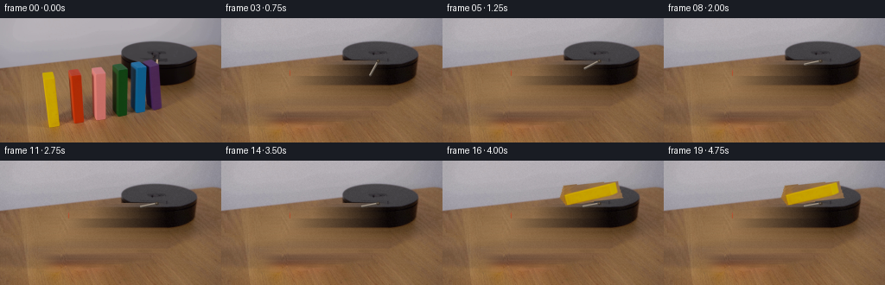
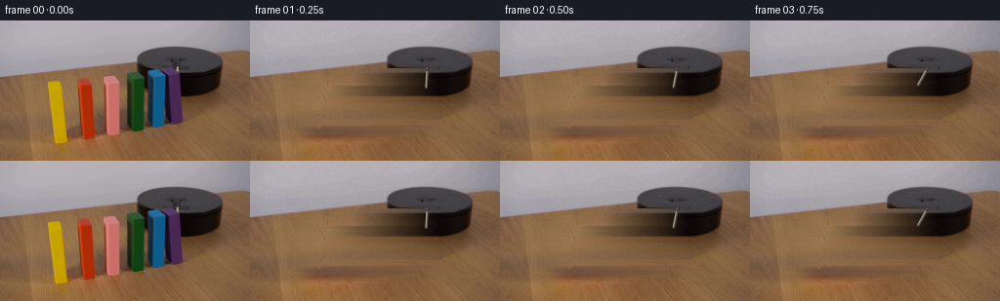
展开代码变化
--- 上一保存版本
+++ 本次保存版本
@@ -18,44 +18,44 @@
{
"name": "yellow",
"poly": [(49, 61), (67, 57), (68, 126), (59, 132), (47, 126)],
- "pivot": (66.5, 128.0),
- "start": 9.55,
- "duration": 4.05,
+ "pivot": (48.0, 128.0),
+ "start": 10.35,
+ "duration": 3.95,
},
{
"name": "red",
"poly": [(82, 58), (100, 57), (103, 122), (94, 128), (79, 122)],
- "pivot": (101.0, 125.0),
- "start": 8.05,
- "duration": 4.05,
+ "pivot": (80.0, 125.0),
+ "start": 8.75,
+ "duration": 3.95,
},
{
"name": "pink",
"poly": [(106, 55), (126, 52), (127, 121), (119, 127), (103, 121)],
- "pivot": (125.5, 123.0),
- "start": 6.55,
- "duration": 4.00,
+ "pivot": (104.0, 123.0),
+ "start": 7.20,
+ "duration": 3.90,
},
{
"name": "green",
"poly": [(130, 52), (149, 50), (150, 116), (142, 124), (127, 116)],
- "pivot": (148.5, 121.0),
- "start": 5.05,
- "duration": 3.95,
+ "pivot": (128.0, 121.0),
+ "start": 5.70,
+ "duration": 3.85,
},
{
"name": "blue",
"poly": [(152, 50), (171, 48), (171, 111), (165, 120), (147, 112)],
- "pivot": (169.5, 117.0),
- "start": 3.55,
- "duration": 3.90,
+ "pivot": (148.0, 117.0),
+ "start": 4.25,
+ "duration": 3.80,
},
{
"name": "purple",
"poly": [(173, 45), (189, 42), (193, 96), (186, 110), (168, 102)],
- "pivot": (190.5, 105.0),
- "start": 2.05,
- "duration": 3.85,
+ "pivot": (169.0, 105.0),
+ "start": 2.75,
+ "duration": 3.75,
},
]
@@ -157,11 +157,14 @@
keys = np.array(
[
[0.0, 90.0],
- [1.0, 102.0],
- [2.0, 135.0],
- [3.0, 165.0],
- [4.0, 178.0],
- [20.0, 179.0],
+ [1.0, 93.0],
+ [2.0, 101.0],
+ [3.0, 119.0],
+ [4.0, 139.0],
+ [5.0, 153.0],
+ [6.0, 162.0],
+ [7.0, 168.0],
+ [20.0, 170.0],
]
)
return float(np.interp(frame, keys[:, 0], keys[:, 1]))
@@ -232,19 +235,19 @@
def add_lever(canvas, frame):
theta = np.deg2rad(lever_angle(frame))
pivot = np.array([181.5, 49.5]) * S
- length = 27.0 * S
- tip = pivot + np.array([-np.cos(theta), np.sin(theta)]) * length
+ length = 19.0 * S
+ tip = pivot + np.array([np.cos(theta), np.sin(theta)]) * length
p0 = tuple(np.round(pivot).astype(int))
p1 = tuple(np.round(tip).astype(int))
layer = np.zeros((H * S, W * S, 4), dtype=np.uint8)
- cv2.line(layer, p0, p1, (77, 65, 55, 255), int(2.8 * S), cv2.LINE_AA)
+ cv2.line(layer, p0, p1, (83, 76, 69, 255), int(2.7 * S), cv2.LINE_AA)
cv2.line(
layer,
(p0[0] - S // 2, p0[1] - S // 2),
(p1[0] - S // 2, p1[1] - S // 2),
- (150, 131, 109, 255),
- int(1.2 * S),
+ (163, 150, 135, 255),
+ int(1.0 * S),
cv2.LINE_AA,
)
cv2.circle(layer, p0, int(2.0 * S), (64, 54, 44, 255), -1, cv2.LINE_AA)
候选 05播放与检查图
点击播放 · 原生 RGB 像素

展开代码变化
--- 上一保存版本
+++ 本次保存版本
@@ -21,6 +21,7 @@
"pivot": (48.0, 128.0),
"start": 10.35,
"duration": 3.95,
+ "end": -87.0,
},
{
"name": "red",
@@ -28,6 +29,7 @@
"pivot": (80.0, 125.0),
"start": 8.75,
"duration": 3.95,
+ "end": -85.0,
},
{
"name": "pink",
@@ -35,6 +37,7 @@
"pivot": (104.0, 123.0),
"start": 7.20,
"duration": 3.90,
+ "end": -83.0,
},
{
"name": "green",
@@ -42,6 +45,7 @@
"pivot": (128.0, 121.0),
"start": 5.70,
"duration": 3.85,
+ "end": -81.0,
},
{
"name": "blue",
@@ -49,6 +53,7 @@
"pivot": (148.0, 117.0),
"start": 4.25,
"duration": 3.80,
+ "end": -78.5,
},
{
"name": "purple",
@@ -56,6 +61,7 @@
"pivot": (169.0, 105.0),
"start": 2.75,
"duration": 3.75,
+ "end": -75.0,
},
]
@@ -147,10 +153,10 @@
if t <= 0:
return 0.0
if t >= 1:
- return 83.5
+ return block["end"]
# A domino accelerates after release, then loses angular speed as it
# reaches its neighbour/table.
- return -82.0 * (0.82 * t**1.58 + 0.18 * smootherstep(t))
+ return block["end"] * (0.82 * t**1.58 + 0.18 * smootherstep(t))
def lever_angle(frame):
@@ -234,20 +240,20 @@
def add_lever(canvas, frame):
theta = np.deg2rad(lever_angle(frame))
- pivot = np.array([181.5, 49.5]) * S
+ pivot = np.array([181.5, 50.5]) * S
length = 19.0 * S
tip = pivot + np.array([np.cos(theta), np.sin(theta)]) * length
p0 = tuple(np.round(pivot).astype(int))
p1 = tuple(np.round(tip).astype(int))
layer = np.zeros((H * S, W * S, 4), dtype=np.uint8)
- cv2.line(layer, p0, p1, (83, 76, 69, 255), int(2.7 * S), cv2.LINE_AA)
+ cv2.line(layer, p0, p1, (113, 101, 88, 255), int(3.0 * S), cv2.LINE_AA)
cv2.line(
layer,
(p0[0] - S // 2, p0[1] - S // 2),
(p1[0] - S // 2, p1[1] - S // 2),
- (163, 150, 135, 255),
- int(1.0 * S),
+ (193, 179, 161, 255),
+ int(1.15 * S),
cv2.LINE_AA,
)
cv2.circle(layer, p0, int(2.0 * S), (64, 54, 44, 255), -1, cv2.LINE_AA)
候选 06播放与检查图
点击播放 · 原生 RGB 像素
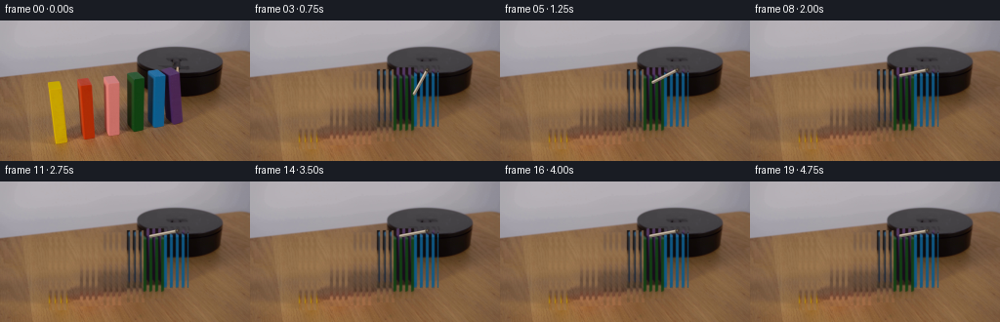
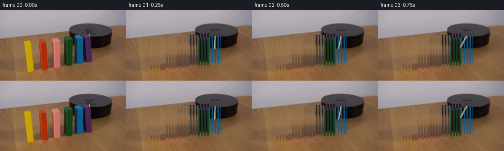
展开代码变化
--- 上一保存版本
+++ 本次保存版本
@@ -93,28 +93,28 @@
inpaint_mask = np.maximum(inpaint_mask, mask)
inpaint_mask = cv2.dilate(inpaint_mask, np.ones((3, 3), np.uint8))
- background = source.astype(np.float32).copy()
- rng = np.random.default_rng(34)
- grain = rng.normal(0.0, 1.8, (H, W, 1)).astype(np.float32)
- for y in range(H):
- row = inpaint_mask[y] > 0
- if not row.any():
- continue
- starts = np.flatnonzero(row & ~np.r_[False, row[:-1]])
- ends = np.flatnonzero(row & ~np.r_[row[1:], False])
- for x0, x1 in zip(starts, ends):
- left = source[y, max(0, x0 - 5) : x0]
- right = source[y, x1 + 1 : min(W, x1 + 6)]
+ # Preserve the real wood grain by replacing each occluded strip with
+ # nearby table pixels rather than painting a flat interpolation.
+ background = source.copy()
+ for block in BLOCKS:
+ ys, xs = np.where(polygon_mask((W, H), block["poly"], shrink=-1.0) > 0)
+ x0, x1 = xs.min() + 1, xs.max() - 1
+ y0, y1 = ys.min() + 1, ys.max() - 1
+ for y in range(y0, min(y1 + 1, H)):
+ left = source[y, max(0, x0 - 3) : max(1, x0)]
+ right = source[y, min(W - 1, x1 + 1) : min(W, x1 + 4)]
if len(left) and len(right):
- c0 = np.median(left, axis=0)
- c1 = np.median(right, axis=0)
- mix = np.linspace(0.0, 1.0, x1 - x0 + 1)[:, None]
- background[y, x0 : x1 + 1] = c0 * (1.0 - mix) + c1 * mix
- elif len(left):
- background[y, x0 : x1 + 1] = np.median(left, axis=0)
- elif len(right):
- background[y, x0 : x1 + 1] = np.median(right, axis=0)
- background = np.clip(background + grain, 0, 255).astype(np.uint8)
+ strip = np.resize(
+ np.concatenate([left, right], axis=0), (x1 - x0 + 1, 3)
+ )
+ background[y, x0 : x1 + 1] = strip
+ # Soften only the narrow replacement seams.
+ blend = cv2.GaussianBlur(background, (0, 0), 1.0)
+ mask_soft = cv2.GaussianBlur(inpaint_mask, (0, 0), 1.2).astype(np.float32)[:, :, None] / 255.0
+ background = (
+ background.astype(np.float32) * (1.0 - mask_soft * 0.45)
+ + blend.astype(np.float32) * (mask_soft * 0.45)
+ ).astype(np.uint8)
sprites = []
for block in BLOCKS:
@@ -241,18 +241,18 @@
def add_lever(canvas, frame):
theta = np.deg2rad(lever_angle(frame))
pivot = np.array([181.5, 50.5]) * S
- length = 19.0 * S
+ length = 28.0 * S
tip = pivot + np.array([np.cos(theta), np.sin(theta)]) * length
p0 = tuple(np.round(pivot).astype(int))
p1 = tuple(np.round(tip).astype(int))
layer = np.zeros((H * S, W * S, 4), dtype=np.uint8)
- cv2.line(layer, p0, p1, (113, 101, 88, 255), int(3.0 * S), cv2.LINE_AA)
+ cv2.line(layer, p0, p1, (126, 114, 100, 255), int(3.2 * S), cv2.LINE_AA)
cv2.line(
layer,
(p0[0] - S // 2, p0[1] - S // 2),
(p1[0] - S // 2, p1[1] - S // 2),
- (193, 179, 161, 255),
+ (205, 191, 172, 255),
int(1.15 * S),
cv2.LINE_AA,
)
候选 07播放与检查图
点击播放 · 原生 RGB 像素
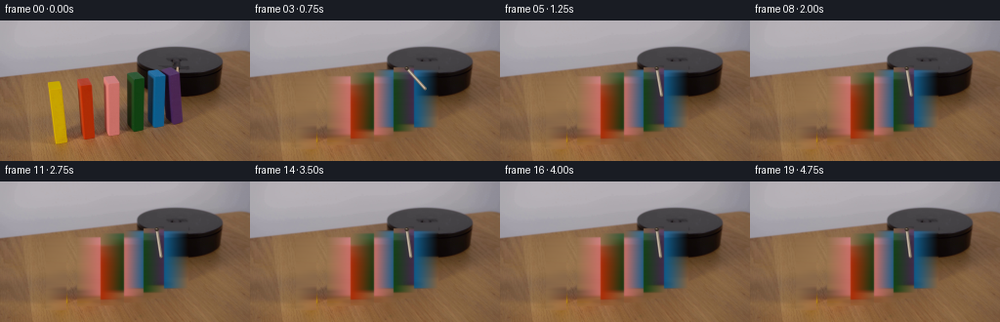
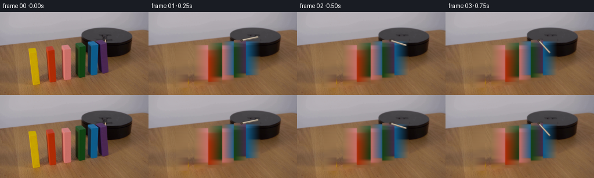
展开代码变化
--- 上一保存版本
+++ 本次保存版本
@@ -93,21 +93,25 @@
inpaint_mask = np.maximum(inpaint_mask, mask)
inpaint_mask = cv2.dilate(inpaint_mask, np.ones((3, 3), np.uint8))
- # Preserve the real wood grain by replacing each occluded strip with
- # nearby table pixels rather than painting a flat interpolation.
+ # Preserve the real wood grain and lighting by replacing each occluded
+ # strip from clean table samples farther from the block edges.
background = source.copy()
for block in BLOCKS:
ys, xs = np.where(polygon_mask((W, H), block["poly"], shrink=-1.0) > 0)
x0, x1 = xs.min() + 1, xs.max() - 1
y0, y1 = ys.min() + 1, ys.max() - 1
for y in range(y0, min(y1 + 1, H)):
- left = source[y, max(0, x0 - 3) : max(1, x0)]
- right = source[y, min(W - 1, x1 + 1) : min(W, x1 + 4)]
+ left = source[y, max(0, x0 - 13) : max(1, x0 - 5)]
+ right = source[y, min(W - 1, x1 + 5) : min(W, x1 + 13)]
if len(left) and len(right):
- strip = np.resize(
- np.concatenate([left, right], axis=0), (x1 - x0 + 1, 3)
- )
- background[y, x0 : x1 + 1] = strip
+ c0 = np.median(left, axis=0)
+ c1 = np.median(right, axis=0)
+ mix = np.linspace(0.0, 1.0, x1 - x0 + 1)[:, None]
+ background[y, x0 : x1 + 1] = c0 * (1.0 - mix) + c1 * mix
+ elif len(left):
+ background[y, x0 : x1 + 1] = np.median(left, axis=0)
+ elif len(right):
+ background[y, x0 : x1 + 1] = np.median(right, axis=0)
# Soften only the narrow replacement seams.
blend = cv2.GaussianBlur(background, (0, 0), 1.0)
mask_soft = cv2.GaussianBlur(inpaint_mask, (0, 0), 1.2).astype(np.float32)[:, :, None] / 255.0
@@ -162,15 +166,13 @@
def lever_angle(frame):
keys = np.array(
[
- [0.0, 90.0],
- [1.0, 93.0],
- [2.0, 101.0],
- [3.0, 119.0],
- [4.0, 139.0],
- [5.0, 153.0],
- [6.0, 162.0],
- [7.0, 168.0],
- [20.0, 170.0],
+ [0.0, -38.0],
+ [1.0, -12.0],
+ [2.0, 17.0],
+ [3.0, 48.0],
+ [4.0, 69.0],
+ [5.0, 80.0],
+ [20.0, 83.0],
]
)
return float(np.interp(frame, keys[:, 0], keys[:, 1]))
@@ -240,7 +242,7 @@
def add_lever(canvas, frame):
theta = np.deg2rad(lever_angle(frame))
- pivot = np.array([181.5, 50.5]) * S
+ pivot = np.array([160.5, 49.0]) * S
length = 28.0 * S
tip = pivot + np.array([np.cos(theta), np.sin(theta)]) * length
p0 = tuple(np.round(pivot).astype(int))
可观测工具轨迹
实际执行的命令与返回图片。
命令 1exit 0
/bin/bash -c "pwd && rg --files -g '"'!first_frame.png'"'"
命令 2exit 0
/bin/bash -c 'cat GENERATION_RULES.md'
命令 3exit 0
/bin/bash -c 'cat prompt.txt && file first_frame.png && identify first_frame.png 2>/dev/null || true'
命令 4exit 0
/bin/bash -c "command -v ffmpeg; command -v blender; command -v python3; python3 - <<'PY' mods=['cv2','numpy','PIL','torch','diffusers','imageio','moviepy','scipy','skimage'] for m in mods: try: x=__import__(m); print(m,'OK',getattr(x,'__version__','')) except Exception as e: print(m,'NO',type(e).__name__) PY"
命令 5exit 0
/bin/bash -c 'cat artifact_io.py'
命令 6exit 0
/bin/bash -c 'cat player_template.html'
命令 7exit 0
/bin/bash -c "python3 - <<'PY'
from PIL import Image
im=Image.open('first_frame.png')
print(im.mode, im.size)
im.resize((1024,576)).save('.tmp/first_frame_4x.png')
PY"命令 8exit 0
/bin/bash -c "python3 - <<'PY'
from PIL import Image
im=Image.open('first_frame.png')
for name,box,scale in [('blocks',(35,45,195,135),6),('platform',(130,20,235,100),7),('yellow',(45,55,78,133),10)]:
c=im.crop(box); c.resize((c.width*scale,c.height*scale)).save(f'.tmp/{name}.png')
PY"命令 9exit 0
/bin/bash -c "python3 - <<'PY'
from PIL import Image
im=Image.open('first_frame.png')
c=im.crop((150,35,210,85))
c.resize((600,500),Image.Resampling.NEAREST).save('.tmp/lever_nearest.png')
PY"命令 10exit 0
/bin/bash -c "python3 - <<'PY'
from PIL import Image, ImageEnhance, ImageFilter
im=Image.open('first_frame.png')
c=im.crop((140,20,232,98))
for i,(br,co) in enumerate([(2.0,1.8),(3.0,2.5)]):
x=ImageEnhance.Brightness(c).enhance(br); x=ImageEnhance.Contrast(x).enhance(co)
x.resize((920,780),Image.Resampling.NEAREST).save(f'.tmp/platform_enh{i}.png')
PY"命令 11exit 0
/bin/bash -c "python3 - <<'PY'
from PIL import Image, ImageEnhance
im=Image.open('first_frame.png')
c=im.crop((55,25,190,80))
for i in range(3):
x=ImageEnhance.Brightness(c).enhance([1,2.5,4][i]); x=ImageEnhance.Contrast(x).enhance([1,2,3][i])
x.resize((1080,440),Image.Resampling.NEAREST).save(f'.tmp/bridge{i}.png')
PY"命令 12exit 0
/bin/bash -c "python3 - <<'PY'
import cv2, numpy as np
im=cv2.imread('first_frame.png')
# print colors in platform center crop around light stick
for y in range(35,70):
vals=[]
for x in range(160,190):
b,g,r=im[y,x]
if int(r)+int(g)+int(b)>250:
vals.append((x,(int(r),int(g),int(b))))
if vals: print(y,vals)
PY"命令 13exit 0
/bin/bash -c "python3 - <<'PY'
from PIL import Image,ImageEnhance,ImageFilter
im=Image.open('first_frame.png')
c=im.crop((160,38,191,72)).resize((620,680),Image.Resampling.NEAREST)
c=ImageEnhance.Contrast(c).enhance(1.8)
c.save('.tmp/stick.png')
PY"命令 14exit 0
/bin/bash -c "python3 - <<'PY'
import cv2, numpy as np
im=cv2.cvtColor(cv2.imread('first_frame.png'),cv2.COLOR_BGR2RGB)
boxes={'yellow':(45,62,70,132),'red':(79,60,102,127),'pink':(103,57,127,126),'green':(127,55,150,124),'blue':(149,53,171,121),'purple':(167,47,191,110)}
for n,(x0,y0,x1,y1) in boxes.items():
p=im[y0:y1,x0:x1].reshape(-1,3)
# top frequency quantized
q=(p//8*8)
u,c=np.unique(q,axis=0,return_counts=True)
ix=np.argsort(c)[-12:][::-1]
print(n,[(tuple(u[i]),int(c[i])) for i in ix[:8]])
PY"命令 15exit 0
/bin/bash -c "python3 - <<'PY'
from PIL import Image
im=Image.open('first_frame.png')
# pixel perfect upscale whole
im.resize((1536,864),Image.Resampling.NEAREST).save('.tmp/first_nearest.png')
PY"命令 16exit 0
/bin/bash -c "python3 - <<'PY'
from PIL import Image,ImageDraw,ImageFont
im=Image.open('first_frame.png').resize((1024,576),Image.Resampling.NEAREST)
d=ImageDraw.Draw(im)
for x in range(0,256,10):
X=x*4; d.line((X,0,X,576),fill=(255,0,255),width=1); d.text((X+2,2),str(x),fill=(255,255,255))
for y in range(0,144,10):
Y=y*4; d.line((0,Y,1024,Y),fill=(0,255,255),width=1); d.text((2,Y+2),str(y),fill=(255,255,255))
im.save('.tmp/grid.png')
PY"命令 17exit 0
/bin/bash -c "python3 - <<'PY'
import cv2,numpy as np
im=cv2.imread('first_frame.png'); hsv=cv2.cvtColor(im,cv2.COLOR_BGR2HSV)
# hue OpenCV
regions={'yellow':(40,55,80,140),'red':(75,55,110,130),'pink':(100,50,135,130),'green':(122,45,160,130),'blue':(145,40,180,125),'purple':(160,40,200,115)}
for n,(x0,y0,x1,y1) in regions.items():
h,s,v=cv2.split(hsv[y0:y1,x0:x1])
mask=(s>90)&(v>35)
ys,xs=np.where(mask)
if len(xs):
print(n,'bbox',x0+xs.min(),y0+ys.min(),x0+xs.max(),y0+ys.max(),'count',len(xs),'hue',np.median(h[mask]))
PY"命令 18exit 0
/bin/bash -c "python3 - <<'PY'
import cv2,numpy as np
im=cv2.imread('first_frame.png'); hsv=cv2.cvtColor(im,cv2.COLOR_BGR2HSV)
for name,(x0,y0,x1,y1) in {'y':(45,60,73,132),'r':(79,58,105,128),'p':(103,55,130,126),'g':(127,53,153,125),'b':(149,51,174,122),'u':(166,45,193,112)}.items():
p=im[y0:y1,x0:x1]
h,s,v=cv2.split(hsv[y0:y1,x0:x1])
for th in [120,150,180]:
mask=s>th
if mask.sum(): print(name,th,'count',mask.sum(),'hsv med',np.median(h[mask]),np.median(s[mask]),np.median(v[mask]))
PY"命令 19exit 0
/bin/bash -c "python3 - <<'PY'
from PIL import Image
im=Image.open('first_frame.png')
boxes={'yellow':(42,52,75,140),'red':(76,52,108,134),'pink':(99,50,132,132),'green':(122,47,156,130),'blue':(145,44,178,127),'purple':(163,40,198,118)}
for n,b in boxes.items():
c=im.crop(b); c.resize((c.width*12,c.height*12),Image.Resampling.NEAREST).save(f'.tmp/b_{n}.png')
PY"命令 20exit 0
/bin/bash -c "python3 - <<'PY'
import cv2,numpy as np
im=cv2.cvtColor(cv2.imread('first_frame.png'),cv2.COLOR_BGR2RGB)
for y in [55,60,70,80,90,100,110,120,125,130]:
print('y',y)
for x in [47,50,55,60,65,68,80,85,90,95,105,110,115,120,128,132,136,140,150,154,158,163,168,175,180,185]:
r,g,b=im[y,x]
# report saturated-ish
if max(r,g,b)-min(r,g,b)>40: print(x,(int(r),int(g),int(b)),end=';')
print()
PY"命令 21exit 0
/bin/bash -c "python3 - <<'PY'
import cv2,numpy as np
im=cv2.imread('first_frame.png'); hsv=cv2.cvtColor(im,cv2.COLOR_BGR2HSV)
ranges={'yellow':((20,120,80),(40,255,255)),'red':((0,130,80),(15,255,255)),'pink':((0,40,100),(20,220,255)),'green':((35,80,20),(85,255,160)),'blue':((90,100,50),(115,255,255)),'purple':((120,60,30),(165,255,180))}
for n,(lo,hi) in ranges.items():
m=cv2.inRange(hsv,np.array(lo),np.array(hi))
ys,xs=np.where(m>0)
print(n,len(xs), (xs.min(),ys.min(),xs.max(),ys.max()) if len(xs) else None)
PY"命令 22exit 0
/bin/bash -c "python3 - <<'PY'
import cv2,numpy as np
im=cv2.imread('first_frame.png'); hsv=cv2.cvtColor(im,cv2.COLOR_BGR2HSV)
# print hue around red bbox
for y in [60,70,80,90,100,110,120]:
print(y,[(x,tuple(int(v) for v in hsv[y,x])) for x in range(76,105,4)])
PY"命令 23exit 0
/bin/bash -c "python3 - <<'PY'
from PIL import Image,ImageEnhance
im=Image.open('first_frame.png')
c=im.crop((150,42,190,70))
for r in ['nearest','bicubic','lanczos']:
rs={'nearest':Image.Resampling.NEAREST,'bicubic':Image.Resampling.BICUBIC,'lanczos':Image.Resampling.LANCZOS}[r]
x=c.resize((800,560),rs)
x=ImageEnhance.Contrast(x).enhance(1.3)
x.save(f'.tmp/lever_{r}.png')
PY"命令 24exit 0
/bin/bash -c "python3 - <<'PY'
from PIL import Image
im=Image.open('first_frame.png')
c=im.crop((162,30,190,68)).resize((560,760),Image.Resampling.NEAREST)
c.save('.tmp/lever2.png')
PY"命令 25exit 0
/bin/bash -c "python3 - <<'PY'
import cv2,numpy as np
im=cv2.imread('first_frame.png'); hsv=cv2.cvtColor(im,cv2.COLOR_BGR2HSV)
# print pixels center crop RGB and HSV where r high
for y in range(34,66):
for x in range(160,190):
b,g,r=im[y,x]; h,s,v=hsv[y,x]
if (int(r)+int(g)+int(b)>210) and max(b,g,r)>90:
print(x,y,(int(r),int(g),int(b)),(int(h),int(s),int(v)))
PY"命令 26exit 0
/bin/bash -c "python3 - <<'PY'
from PIL import Image
im=Image.open('first_frame.png')
# color block at 162, 32 etc
for y in range(25,50):
print(y, im.getpixel((170,y)), im.getpixel((180,y)), im.getpixel((183,y)))
PY"命令 27exit 0
/bin/bash -c "python3 - <<'PY'
import cv2,numpy as np
im=cv2.imread('first_frame.png'); hsv=cv2.cvtColor(im,cv2.COLOR_BGR2HSV)
for n,(x0,y0,x1,y1) in {'y':(46,55,72,135),'r':(80,55,100,130),'p':(104,52,126,130),'g':(128,50,151,128),'b':(150,47,172,125),'u':(167,43,193,116)}.items():
h,s,v=cv2.split(hsv[y0:y1,x0:x1]); mask=(s>120)
print(n, 'med',np.median(h[mask]),np.median(s[mask]),np.median(v[mask]), 'minmax',h[mask].min(),h[mask].max())
PY"命令 28exit 0
/bin/bash -c "python3 - <<'PY'
import cv2,numpy as np
im=cv2.imread('first_frame.png'); hsv=cv2.cvtColor(im,cv2.COLOR_BGR2HSV)
for y in [50,55,60,70,80,90,100,110,120,130]:
print('y',y, 'pink:', [(x,tuple(int(q) for q in hsv[y,x])) for x in range(103,128,4)])
PY"命令 29exit 0
/bin/bash -c "python3 - <<'PY'
import cv2,numpy as np
from PIL import Image
im=cv2.imread('first_frame.png')
crop=im[20:90,140:230]
# sat and gradient
hsv=cv2.cvtColor(crop,cv2.COLOR_BGR2HSV)
s=hsv[:,:,1]; v=hsv[:,:,2]
# emphasize values >30 but low sat (metal) via CLAHE
lab=cv2.cvtColor(crop,cv2.COLOR_BGR2LAB); l,a,b=cv2.split(lab); l=cv2.createCLAHE(clipLimit=4,tileGridSize=(4,4)).apply(l); out=cv2.cvtColor(cv2.merge([l,a,b]),cv2.COLOR_LAB2BGR)
cv2.imwrite('.tmp/platform_clahe.png',cv2.resize(out,None,fx=10,fy=10,interpolation=cv2.INTER_NEAREST))
# edges overlay
edge=cv2.Canny(crop,25,60); base=cv2.resize(crop,None,fx=10,fy=10,interpolation=cv2.INTER_NEAREST); e=cv2.resize(edge,None,fx=10,fy=10,interpolation=cv2.INTER_NEAREST); base[e>0]=(0,255,0); cv2.imwrite('.tmp/platform_edges.png',base)
PY"命令 30exit 0
/bin/bash -c "python3 - <<'PY'
from PIL import Image
im=Image.open('first_frame.png')
# average rows y=50..58 and x=60..160 grayscale? print color each 5 px
for y in range(48,60):
print(y,[im.getpixel((x,y)) for x in range(60,166,10)])
PY"命令 31exit 0
/bin/bash -c "python3 - <<'PY'
import cv2,numpy as np
im=cv2.imread('first_frame.png'); hsv=cv2.cvtColor(im,cv2.COLOR_BGR2HSV)
# inspect metal-ish low saturation high-ish light in platform crop
for y in range(25,68,2):
vals=[]
for x in range(145,205,2):
b,g,r=im[y,x]; h,s,v=hsv[y,x]
if s<45 and v>65: vals.append((x,int(v),int(s)))
if vals: print(y,vals)
PY"命令 32exit 0
/bin/bash -c "python3 - <<'PY'
from PIL import Image
im=Image.open('first_frame.png')
# platform bbox with only mild enhance
im.crop((145,20,225,80)).resize((1200,900),Image.Resampling.NEAREST).save('.tmp/platform_raw.png')
PY"命令 33exit 0
/bin/bash -c "python3 - <<'PY'
from PIL import Image,ImageEnhance
im=Image.open('first_frame.png')
c=im.crop((155,38,180,65)).resize((750,810),Image.Resampling.NEAREST)
c=ImageEnhance.Brightness(c).enhance(1.8)
c=ImageEnhance.Contrast(c).enhance(2)
c.save('.tmp/core_enh.png')
PY"视觉工具实际返回图片 1

视觉工具实际返回图片 2

视觉工具实际返回图片 3

视觉工具实际返回图片 4

视觉工具实际返回图片 5

视觉工具实际返回图片 6

视觉工具实际返回图片 7

视觉工具实际返回图片 8

视觉工具实际返回图片 9

视觉工具实际返回图片 10

视觉工具实际返回图片 11

视觉工具实际返回图片 12

视觉工具实际返回图片 13

视觉工具实际返回图片 14

视觉工具实际返回图片 15

视觉工具实际返回图片 16

视觉工具实际返回图片 17

视觉工具实际返回图片 18

命令 34exit 0
/bin/bash -c 'ls -la generate.py frames pixels.npz index.html inspection.png 2>/dev/null || true'
命令 35exit 0
/bin/bash -c "python3 - <<'PY'
from PIL import Image, ImageEnhance
im=Image.open('first_frame.png')
c=im.crop((38,38,192,72))
for b,cx in [(1.6,1.4),(2.6,2.2),(4,3)]:
x=ImageEnhance.Brightness(c).enhance(b)
x=ImageEnhance.Contrast(x).enhance(cx)
x.resize((1232,272),Image.Resampling.NEAREST).save(f'.tmp/bar_{b}.png')
PY"命令 36exit 0
/bin/bash -c 'python3 generate.py'
命令 37exit 0
/bin/bash -c 'python3 generate.py'
命令 38exit 0
/bin/bash -c 'python3 generate.py'
命令 39exit 0
/bin/bash -c 'python3 generate.py'
命令 40exit 0
/bin/bash -c "python3 - <<'PY'
import cv2,numpy as np
from PIL import Image
im=cv2.imread('first_frame.png')
crop=im[34:66,168:201]
for mode in ['raw','clahe','edge']:
if mode=='raw': out=crop
elif mode=='clahe':
lab=cv2.cvtColor(crop,cv2.COLOR_BGR2LAB); l,a,b=cv2.split(lab); l=cv2.createCLAHE(clipLimit=6,tileGridSize=(2,2)).apply(l); out=cv2.cvtColor(cv2.merge([l,a,b]),cv2.COLOR_LAB2BGR)
else:
g=cv2.cvtColor(crop,cv2.COLOR_BGR2GRAY); out=cv2.cvtColor(cv2.Canny(g,20,60),cv2.COLOR_GRAY2BGR)
cv2.imwrite(f'.tmp/hub_{mode}.png',cv2.resize(out,None,fx=16,fy=16,interpolation=cv2.INTER_NEAREST))
PY"命令 41exit 0
/bin/bash -c "python3 - <<'PY'
from PIL import Image
for i in [2,3,4,5,6,7,8,10,12,14,16,19]:
im=Image.open(f'frames/{i:02d}.png').resize((1024,576),Image.Resampling.NEAREST)
im.save(f'.tmp/f{i:02d}_big.png')
PY"命令 42exit 0
/bin/bash -c 'python3 generate.py'
命令 43exit 0
/bin/bash -c "python3 - <<'PY'
from PIL import Image
for i in [1,2,3,4,5,6,7,8,10,12,14,16,19]:
Image.open(f'frames/{i:02d}.png').resize((1024,576),Image.Resampling.NEAREST).save(f'.tmp/f{i:02d}_big.png')
PY"命令 44exit 0
/bin/bash -c "sed -n '75,155p' generate.py"
命令 45exit 0
/bin/bash -c 'git status --short 2>/dev/null || true; ls -lh inspection.png pixels.npz frames/19.png'
命令 46exit 0
/bin/bash -c "python3 - <<'PY'
import numpy as np
from PIL import Image
src=np.asarray(Image.open('first_frame.png').convert('RGB'))
f=np.asarray(Image.open('frames/00.png').convert('RGB'))
print('first identical:', np.array_equal(src,f), 'shape', f.shape)
print('frame19 unique colors:', len(np.unique(np.asarray(Image.open('frames/19.png')).reshape(-1,3),axis=0)))
PY"命令 47exit 0
/bin/bash -c "python3 - <<'PY'
from PIL import Image
import numpy as np
for i in [0,1,2,3,4,5,6,7,8,9,10,11,12,13,14,15,16,17,18,19]:
im=np.asarray(Image.open(f'frames/{i:02d}.png'))
# max channel change from first, and coverage of changed pixels
if i==0: continue
s=np.asarray(Image.open('frames/00.png'))
d=np.max(np.abs(im.astype(int)-s.astype(int)),axis=2)
print(i, 'changed',int((d>8).sum()), 'max',int(d.max()))
PY"命令 48exit 0
/bin/bash -c 'python3 generate.py'
命令 49exit 0
/bin/bash -c "python3 generate.py && python3 - <<'PY'
import numpy as np
from PIL import Image
src=np.asarray(Image.open('first_frame.png').convert('RGB'))
frames=np.stack([np.asarray(Image.open(f'frames/{i:02d}.png').convert('RGB')) for i in range(20)])
print('shape',frames.shape,'dtype',frames.dtype)
print('frame0_identical',np.array_equal(src,frames[0]))
print('changed_pixels_per_frame',[int((np.max(np.abs(frames[i].astype(int)-frames[i-1].astype(int)),axis=2)>0).sum()) for i in range(1,20)])
PY"命令 50exit 0
/bin/bash -c "python3 - <<'PY'
from PIL import Image
for i in [1,2,3,4,5,6,7,8,9,10,11,12,13,14,15,16,17,18,19]:
Image.open(f'frames/{i:02d}.png').resize((1024,576),Image.Resampling.NEAREST).save(f'.tmp/g{i:02d}.png')
PY"视觉工具实际返回图片 19
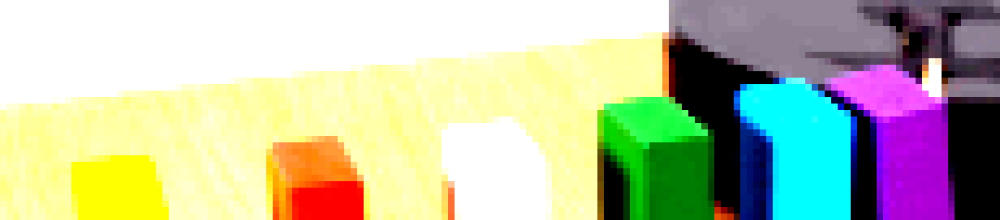
视觉工具实际返回图片 20
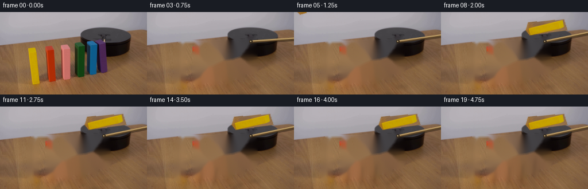
视觉工具实际返回图片 21

视觉工具实际返回图片 22

视觉工具实际返回图片 23
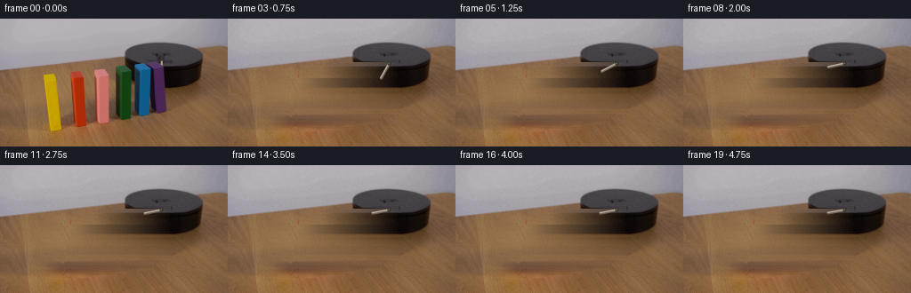
视觉工具实际返回图片 24
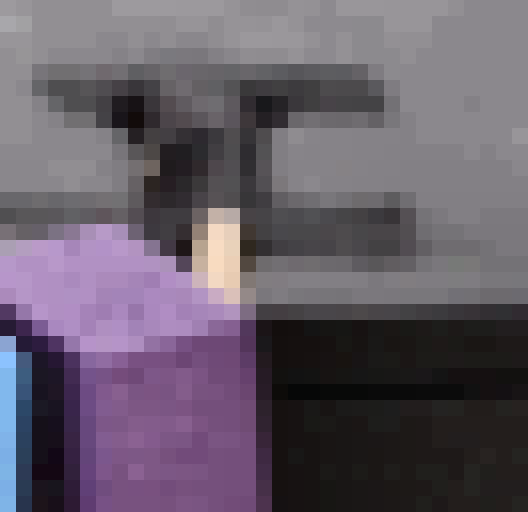
视觉工具实际返回图片 25
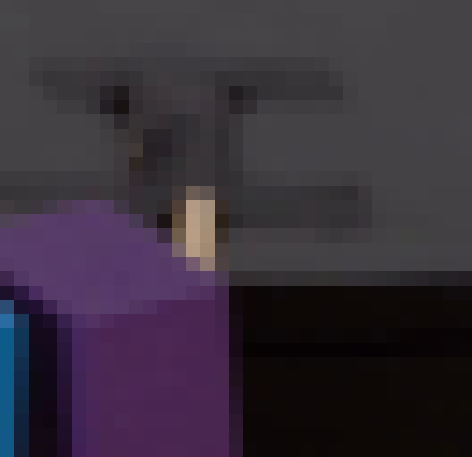
视觉工具实际返回图片 26
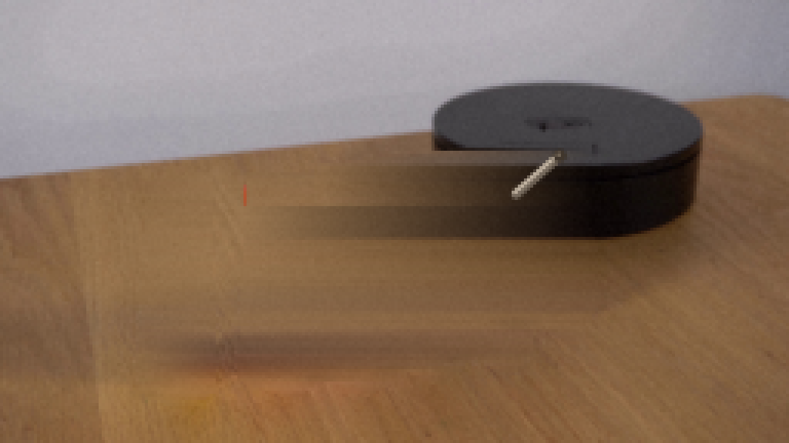
视觉工具实际返回图片 27
视觉工具实际返回图片 28
视觉工具实际返回图片 29
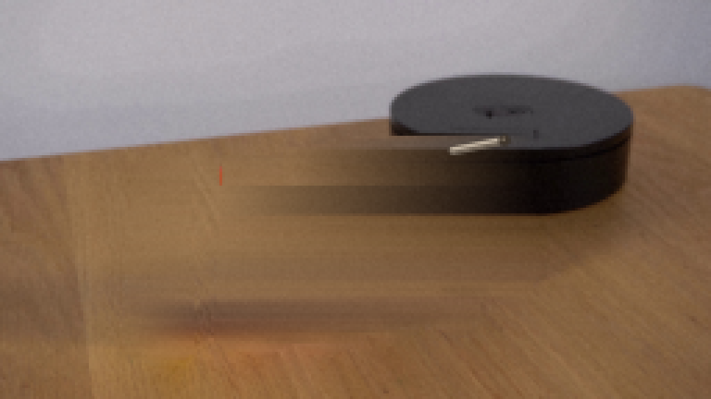
视觉工具实际返回图片 30
视觉工具实际返回图片 31

视觉工具实际返回图片 32
视觉工具实际返回图片 33
视觉工具实际返回图片 34
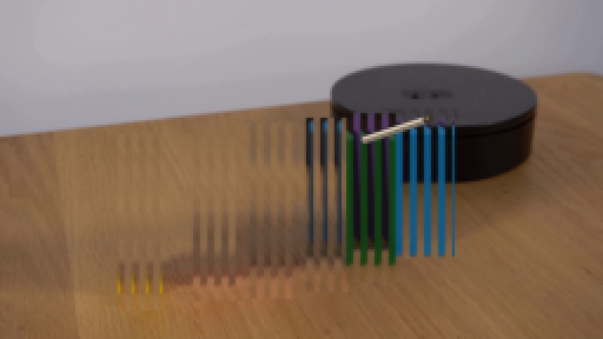
视觉工具实际返回图片 35
视觉工具实际返回图片 36
视觉工具实际返回图片 37

视觉工具实际返回图片 38
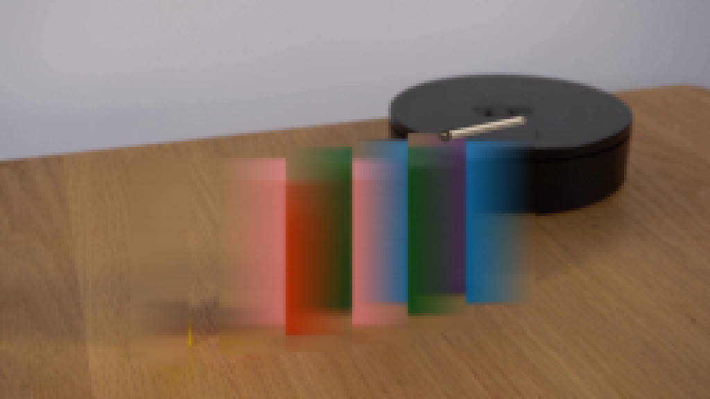
视觉工具实际返回图片 39
视觉工具实际返回图片 40
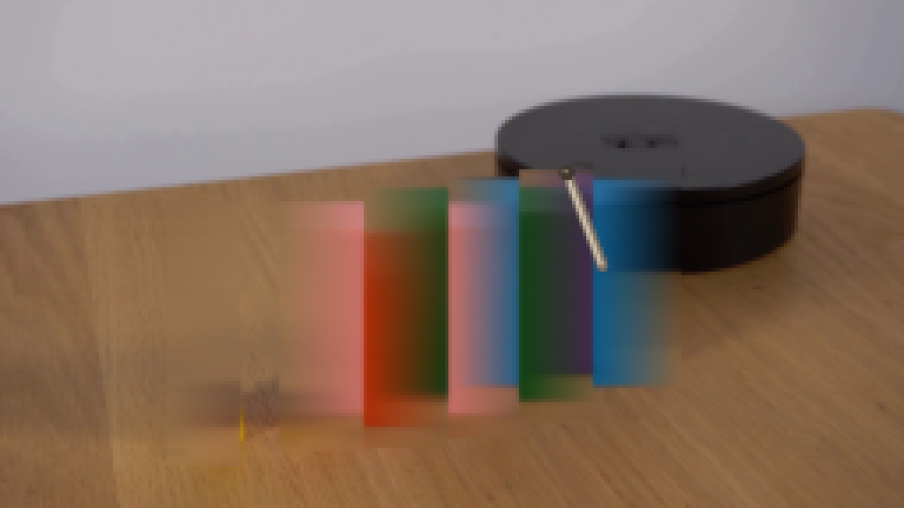
视觉工具实际返回图片 41
视觉工具实际返回图片 42
视觉工具实际返回图片 43
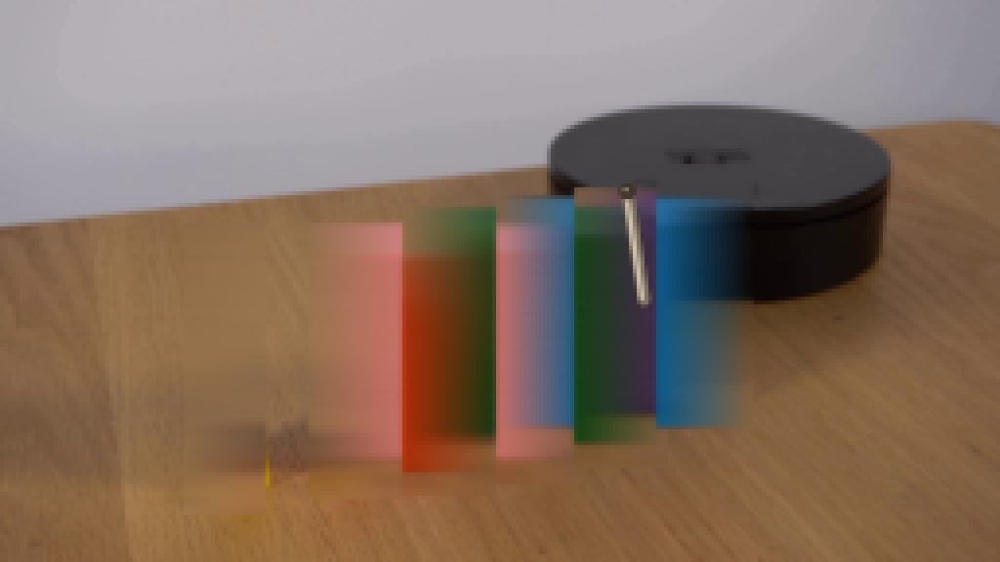
保存候选 7 份；完成命令 50 次；可验证图片返回 43 张。原始 API 响应与完整日志保留在本地。